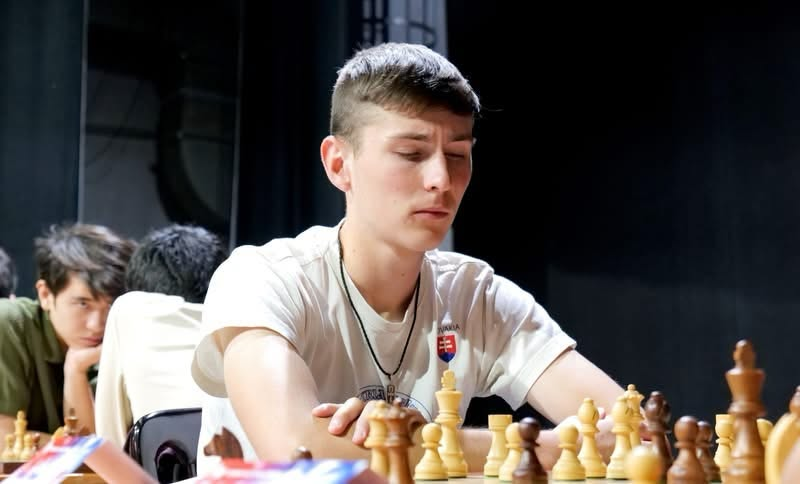

Odbor ISS
Svetlana Pivarčiová
xpivarciovas@stuba.sk
Frontend Developer
Zapisovateľ
Generated AI News
Tvorba spravodajských videí s pomocou AI. Text, hlas a virtuálny moderátor v jednom editore.
Spoznaj projekt01O projekte
GAIN 2.0 je tímový projekt zameraný na tvorbu spravodajských videí pomocou generatívnej AI. Vyvíjame prostredie, ktoré prepája text správ, syntézu hlasu a virtuálnych moderátorov. V editore sa jednotlivé časti spoja, upravia a skontrolujú pred exportom.
Vedúci projektu
Ing. Juraj Vincúr, PhD. PhDr. Jakub Prokeš
02Náš tím

Odbor ISS Odbor ISS
Odbor ISS